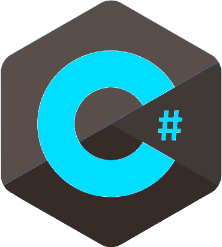

A linguagem C# faz parte do conjunto de ferramentas oferecidas na plataforma .NET e surge como uma linguagem simples, robusta, orientada a objetos, fortemente tipada e altamente escalável a fim de permitir que uma mesma aplicação possa ser executada em diversos dispositivos de hardware, independentemente destes serem PCs, handhelds ou qualquer outro dispositivo móvel.
O avanço das ferramentas de programação e dos dispositivos eletrônicos inteligentes, criou problemas e novas exigências.
As novas versões de componentes compartilhados eram incompatíveis com o software antigo. Os desenvolvedores reconheceram a necessidade de software que fosse acessível para qualquer um e disponível por meio de praticamente qualquer tipo de dispositivo.
Para tratar dessas necessidades, a Microsoft anunciou sua iniciativa .NET e a linguagem de programação C#.
Durante o desenvolvimento da plataforma .NET, as bibliotecas foram escritas originalmente numa linguagem chamada Simple Managed C (SMC), que tinha um compilador próprio. Mas, em Janeiro de 1999, uma equipe de desenvolvimento foi formada por Anders Hejlsberg, que fora escolhido pela Microsoft para desenvolver a linguagem.
Dá-se início à criação da linguagem chamada Cool. Um pouco mais tarde, em 2000, o projeto .NET era apresentado ao público na Professional Developers Conference (PDC), e a linguagem Cool fora renomeada e apresentada como C#.
A criação da linguagem, embora tenha sido feita por vários programadores, é atribuída principalmente a Anders, hoje um Distinguished Engineer na Microsoft. Ele fora o arquiteto de alguns compiladores da Borland, e entre suas criações mais conhecidas estão o Turbo Pascal e o Delphi.

A Microsoft submeteu o C# à ECMA para uma padronização formal. Em Dezembro de 2001 a associação liberou a especificação ECMA-334 Especificação da
Linguagem C#. Em 2003 tornou-se um padrão ISO (ISO/IEC 23270).
Há algumas implementações em desenvolvimento, destacando-se a Mono, implementação open source da Novell, o dotGNU e o Portable.NET,
implementações da Free Software Foundation, e o BDS 2008, implementação da CodeGear.